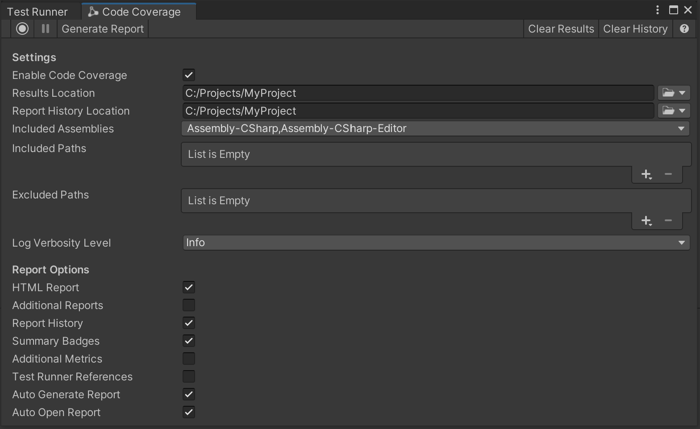

Code Coverage window¶

Toolbar |
Description |
|---|---|
|
Select Start Recording to start recording code coverage data and Stop Recording to stop recording. |
Select Pause Recording to pause recording code coverage data and Resume Recording to resume recording. The buttons are disabled if not in a Coverage Recording session. |
|
Generate Report |
Select Generate Report to generate a coverage report from the last set of tests that were run in the Test Runner or from the last Coverage Recording session. Note that Generate Report is disabled if no tests ran, there is no Coverage Recording data or all HTML Report, Additional Reports and Summary Badges checkboxes are unchecked. |
Clear Results |
Select Clear Results to clear the coverage data from previous test runs or from previous Coverage Recording sessions. Clear Results is disabled if the coverage results are cleared, if no tests ran, or if there is no Coverage Recording data. |
Clear History |
Select Clear History to clear the coverage report history. Clear History is disabled if the history is cleared or if no reports were generated. |
Select Help to open the Documentation Reference for Code Coverage in the web browser. |
|
Settings |
Description |
Enable Code Coverage |
Check this to enable Code Coverage. This is required in order to generate Coverage data and reports. Note that Code Coverage can affect the Editor performance. |
Results Location |
Select the dropdown to open or specify the folder where the coverage results and report are saved to, and to reset to the default location. The default location is the Project’s folder. |
Report History Location |
Select the dropdown to open or specify the folder where the coverage report history is saved to, and to reset to the default location. The default location is the Project’s folder. |
Included Assemblies |
Specify assemblies to be included in the coverage results. This is a dropdown list containing the available assemblies. Click the dropdown to view, select or deselect the assemblies. Select All to select all the assemblies in the project. Select Assets to select only the assemblies under the |
Included Paths |
Select Add (+) to specify individual folders and files to include in coverage results. You can use globbing to filter the paths. If the list is empty, Unity includes all files in the Included Assemblies. To remove an individual list entry, select the entry and then select Remove (-). |
Excluded Paths |
Select Add (+) to specify individual folders and files to exclude from coverage results. You can use globbing to filter the paths. To remove an individual list entry, select the entry and then select Remove (-). |
Log Verbosity Level |
Click the dropdown to set the verbosity level for the editor and console logs. The default level is |
Report Options |
Description |
HTML Report |
Check this to generate an HTML report. |
Additional Reports |
Check this to generate SonarQube, Cobertura and LCOV reports. |
Report History |
Check this to generate and include the coverage history in the HTML report. |
Summary Badges |
Check this to generate coverage summary badges in SVG and PNG format. |
Additional Metrics |
Check this to generate and include additional metrics in the HTML report. These currently include Cyclomatic Complexity and Crap Score calculations for each method. See the Risk Hotspots section for more information. |
Test Runner References |
Check this to include test references to the generated coverage results and enable the Coverage by test methods section in the HTML report. This shows how each test contributes to the overall coverage. |
Auto Generate Report |
Check this to generate the report automatically after the Test Runner finishes running or the Coverage Recording session is complete. |
Auto Open Report |
Check this to open the coverage report automatically after it has been generated. |